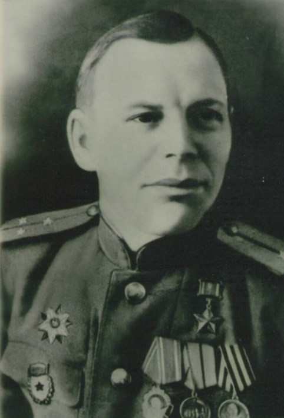

23 июля 1942 года
Источник: История земли Волгоградской А.С. Скрипкин А.В., Луночкин, И.И. Курилла с. 165.
Событие: 23 июля два корпуса противника атаковали правый фланг 62-й армии и к исходу дня 25 июля вышли на правый берег Дона в районе Каменского, глубоко охватив с севера правый фланг 62-й армии. Одновременно противник силами 3 пехотных и 1 танковой дивизии атаковал 25 июля войска правого фланга 64-й армии, оборонявшиеся на рубеже Суровикино - Суворовский. Выйдя на рубеж реки Дон в районе Нижнечирской, противник предпринял неудачную попытку захватить переправы у Логовского и Калача-на-Дону. Кровопролитные бои в большой излучине Дона продолжались до 10 августа. Понеся большие потери, войска Сталинградского фронта все же остановили наступление немецкой 6-й армии и сорвали попытку с ходу захватить Сталинград. Ставка ВГК систематически усиливала войска Сталинградского направления.
Источник: «Победа» от 2 февраля 2013 года.
Подвиг
23 июля Петр Болото с тремя товарищами остановил 30 танков противника. Враг рвался к Сталинграду, 30 машин врага вторглись в расположение Красной Армии. Окруженные бронебойщики уничтожили 15 вражеских машин, остальные повернули назад. Петр Болото лично подбил 8 танков.

В этот же день летчиком Александром Поповым был совершен воздушный таран. Подвиги героев положены в основу живописного полотна диорамы «Стойкость, победившая смерть», расположенная в музее-панораме Сталинградская битва.